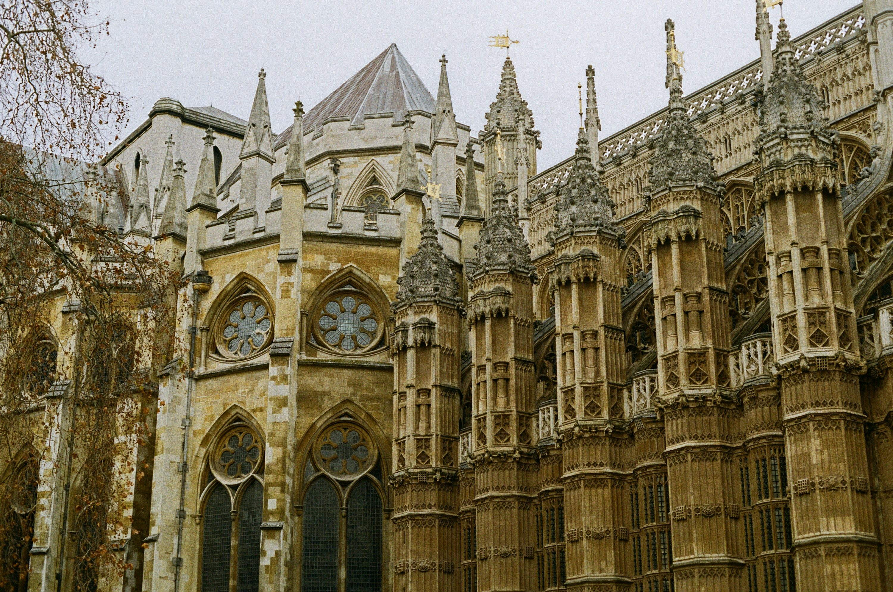
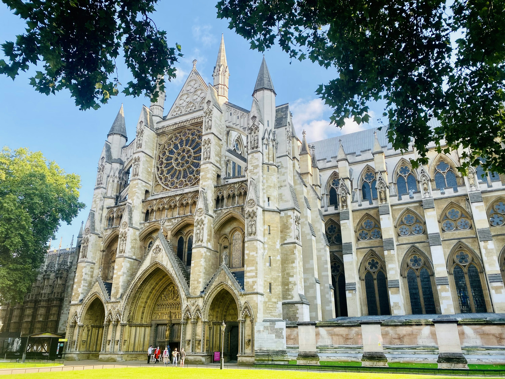
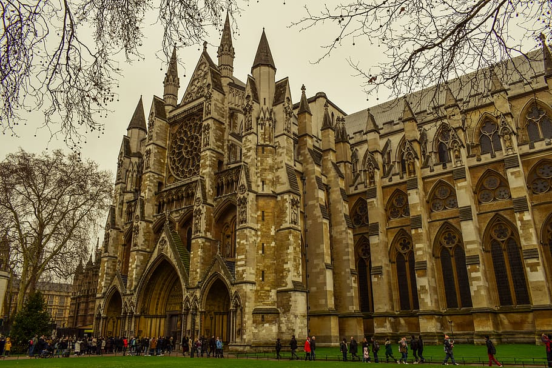

Westminster Abbey in London is a royal church known for coronations, weddings, and burials of British monarchs.
Westminster Abbey, a UNESCO World Heritage Site, is one of the most iconic landmarks in London. It has been the site of royal coronations since 1066, with the crowning of William the Conqueror. The abbey's Gothic architecture, with its towering spires and intricate stained glass windows, draws millions of visitors every year from all over the world. Its historical significance and architectural beauty make it a must-see for anyone visiting London.
In addition to royal ceremonies, Westminster Abbey is also known as the final resting place of many notable figures, including 17 monarchs, writers such as Charles Dickens and Geoffrey Chaucer, and scientists like Sir Isaac Newton. The Poets' Corner, located inside the abbey, is particularly famous for being the burial site of many of the greatest literary figures in British history.
Westminster Abbey is not just a historical site but an active place of worship. It holds regular services, including daily prayers, special religious events, and seasonal celebrations. It also played a crucial role in various national events, such as the funerals of Princess Diana and Queen Elizabeth II, cementing its place in modern British history as a symbol of national unity and remembrance.
Back to Menu